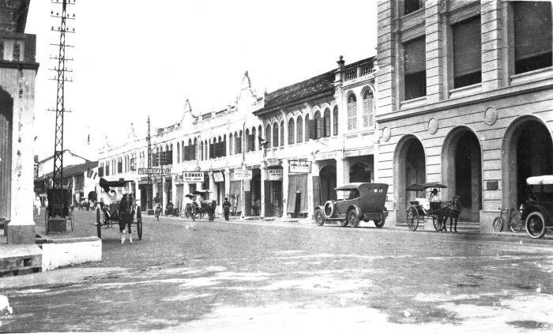

Sejarah Wisata Sumut
Sumatera Utara memiliki berbagai tempat parawisata yang patut di kunjungi oleh wisatawan lokal maupun mancanegara.Menghadapi kawasan perdagangan bebas ASEAN(AFTA) pada tahun 2003, Sumatera Utara harus memperisapkan diri dengan mengandalkan potensi yang ada, termasuk sektor pariwisatanya.
Sumatera Utara dapat menyamai Bali dan dapat diandalkan di pentas internasional, karena lokasinya berdekatan dengan tiga negara, yakni Singapura,Thiland,dan Malaysia.Keterlambatan selama ini disebabkan oleh minimnya sarana,prasarana dan sumber daya manusianya.